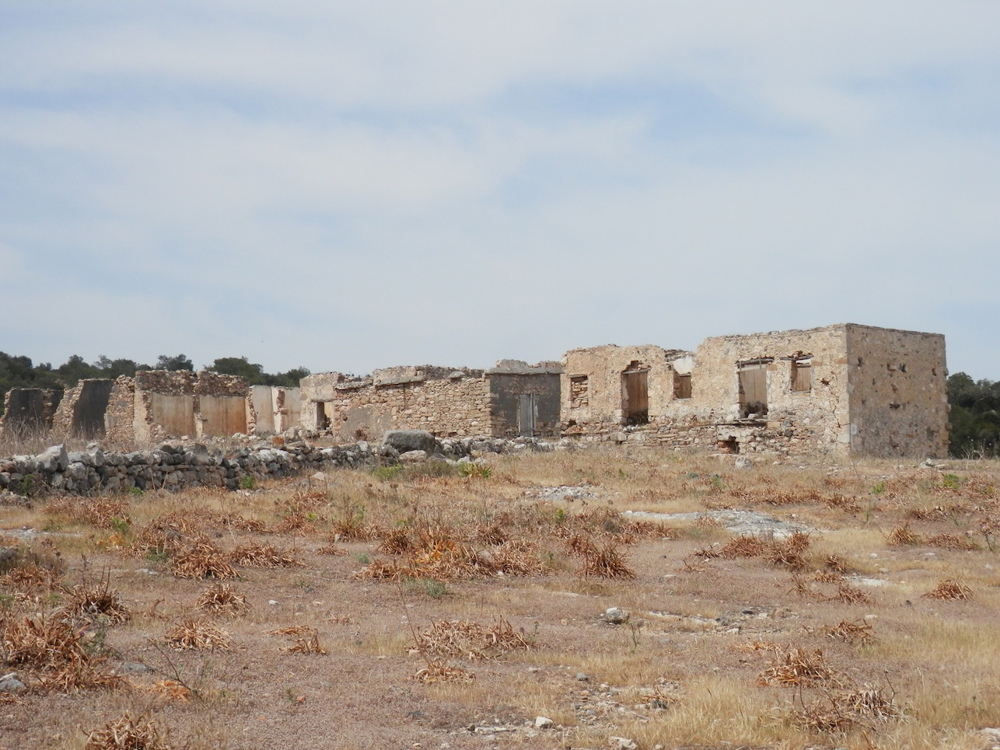
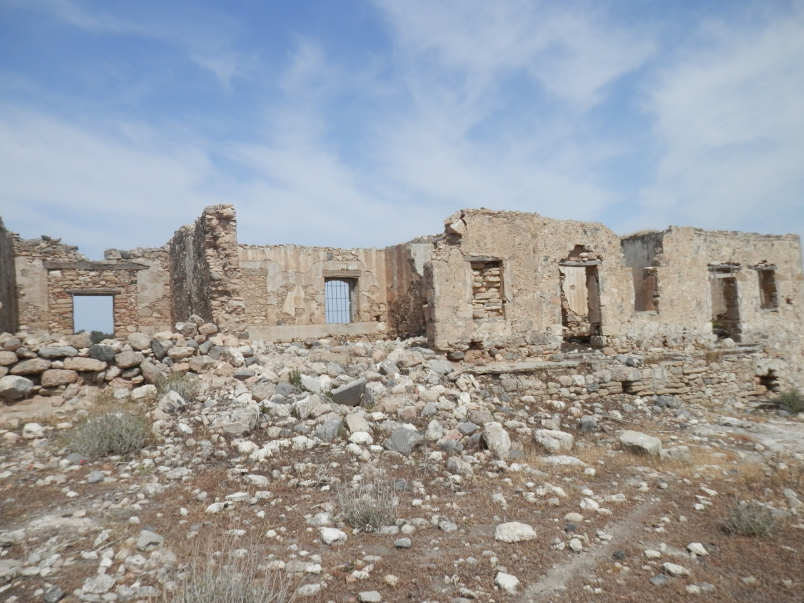
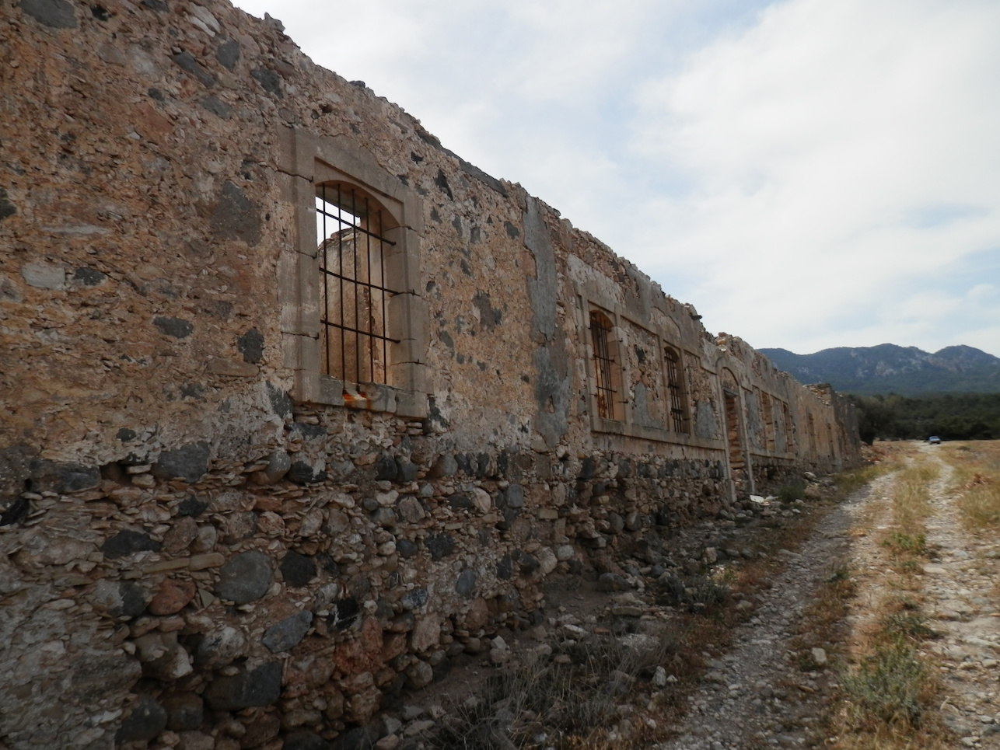
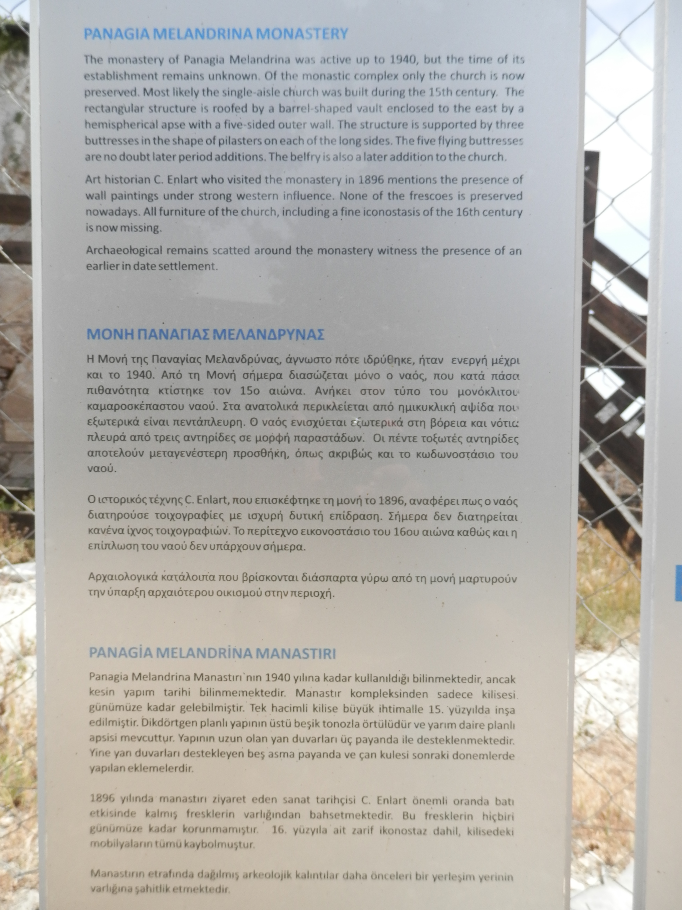
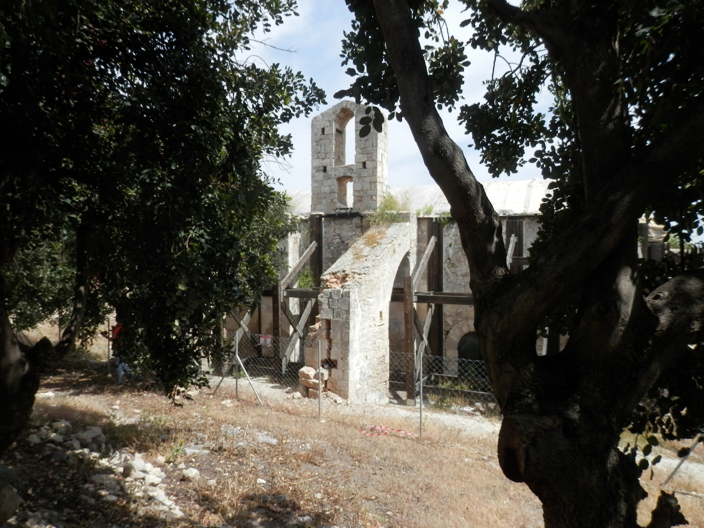
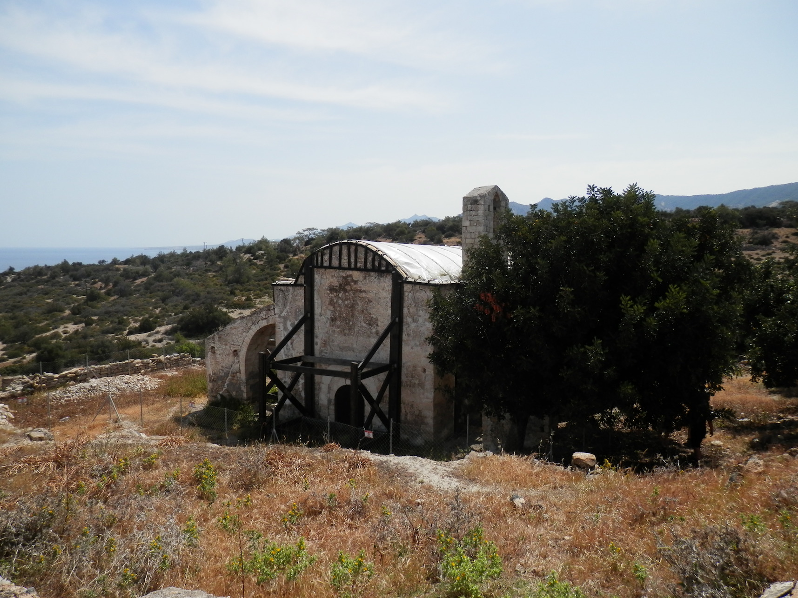

Η Μελανδρύνα ήταν μεσαιωνικός οικισμός που δεν υπάρχει σήμερα. Το όνομα Μελανδρύνα προήλθε από τη συνένωση των λέξεων, μέλι και δρυς, ένα δέντρο που ευδοκιμεί στην περιοχή. Στην τοποθεσία αυτή σώζεται σήμερα μόνο η εκκλησία της Μονής. Στην περιοχή υπάρχουν αρχαία ερείπια, που μαρτυρούν ότι υφίστατο αρχαίος οικισμός, αλλά είναι άγνωστο πότε καταστράφηκε και εγκαταλείφθηκε ο οικισμός και από ποια αιτία.
Μέχρι το 1974 το μοναστήρι αποτελείτο από ένα διώροφο κτίριο και μια τετράγωνη αυλή, στο μέσον της οποίας ήταν η εκκλησία. Τόσο στο ισόγειο όσο και στον όροφο υπήρχε ηλιακός. Κάτω ο ηλιακός στηριζόταν σε οξυκόρυφα τόξα, ενώ στον όροφο υπήρχαν ξύλινοι πάσσαλοι που στήριζαν οριζόντια δοκό, όπως και σε άλλα μοναστηριακά κτίρια του 18ου αιώνα στην Κύπρο. 
Η Μονή είναι αφιερωμένη στην Παναγία, τη μητέρα του Θεού και γιορτάζει την ημέρα της Κοιμήσεως της Θεοτόκου, στις 15 Αυγούστου. Η εκκλησία είναι κτίσμα του 14 ου αιώνα και ρυθμού απλής βασιλικής, είναι μονόκλιτη καμαροσκέπαστη με οξυκόρυφη καμάρα. Κατά μήκος του βόρειου και του νότιου τοίχου εσωτερικά υπάρχουν τόξα, όπως και σε άλλες εκκλησίες του τύπου αυτού. Τοξωτές αντηρίδες προστέθηκαν αργότερα στην εκκλησία, εξωτερικά, ώστε να εξισορροπούνται οι ωθήσεις της καμάρας. Μέσα στον Ναό βρίσκεται το αγίασμα. Σε μικρή απόσταση από την εκκλησία υπάρχουν ερείπια από τα κελιά των μοναχών, με τελευταίο μοναχό τον Πατήρ Άνθιμο που πέθανε το 1940. 
Το 1896, ο περιηγητής C. Enlart είχε παρατηρήσει τοιχογραφίες στο εσωτερικό της εκκλησίας με ισχυρή δυτική επίδραση. Λίγα χρόνια αργότερα, όταν ένας άλλος περιηγητής, ο G. Jeffery, επισκέφθηκε το μοναστήρι, οι τοιχογραφίες είχαν εξαφανισθεί. 
Σύμφωνα με τον βυζαντινολόγο και πρώην διευθυντή του Τμήματος Αρχαιοτήτων Κύπρου, Αθανάσιο Παπαγεωργίου, το εικονοστάσιο της εκκλησίας ήταν όμοιο με το εικονοστάσιο του Αντιφωνητή και πιθανότατα του 16ου αιώνα. Δύο από τις εικόνες του εικονοστασίου, που είχαν κλαπεί το 1973 και βρέθηκαν προτού εξαχθούν από την Κύπρο, χρονολογούνται στον 16ο αιώνα. Δυστυχώς, αργότερα οι εικόνες μεταφέρθηκαν στη Μητρόπολη της Κερύνειας και κλάπηκαν από τους Τούρκους, το 1974. Όπως και σ' άλλα εικονοστάσια του 16ου αιώνα, στο εικονοστάσιο της Μελανδρύνας υπήρχαν προσθήκες του 17ου αιώνα.
Κατά την Τουρκοκρατία ιδρύθηκε στη Μονή αξιόλογη σχολή όπου διδάσκονταν τα Ελληνικά Γράμματα. Μέχρι και το 1878 αναφέρεται ότι τα παιδιά του χωριού καθώς επίσης και των γειτονικών χωριών διδάσκονταν από μοναχούς του μοναστηριού της Παναγίας της Μελανδρύνας.
Η Μονή ανήκει διοικητικά στο χωριό Καλογραία, λειτουργούνταν από τους ιερείς του χωριού οι οποίοι και την φρόντιζαν. Εκτός από τις 15 Αυγούστου ( εγκαίνια της Μονής) το μοναστήρι γιόρταζε και στις 2 Φεβρουαρίου ( Υπαπαντή του Κυρίου). Επίσης, λειτουργούσε και σε περιόδους ανομβρίας, οπότε γίνονταν δεήσεις για να βρέξει.
Μετά την τουρκική εισβολή στην Κύπρο το 1974, η εκκλησία της Μονής της Παναγίας Μελανδρύνας λεηλατήθηκε και καταστράφηκε από τους Τούρκους εισβολείς. Οι εικόνες κλάπηκαν και το τέμπλο αφαιρέθηκε και καταστράφηκε. Όλα τα θρησκευτικά σκεύη έχουν κλαπεί ή καταστραφεί
